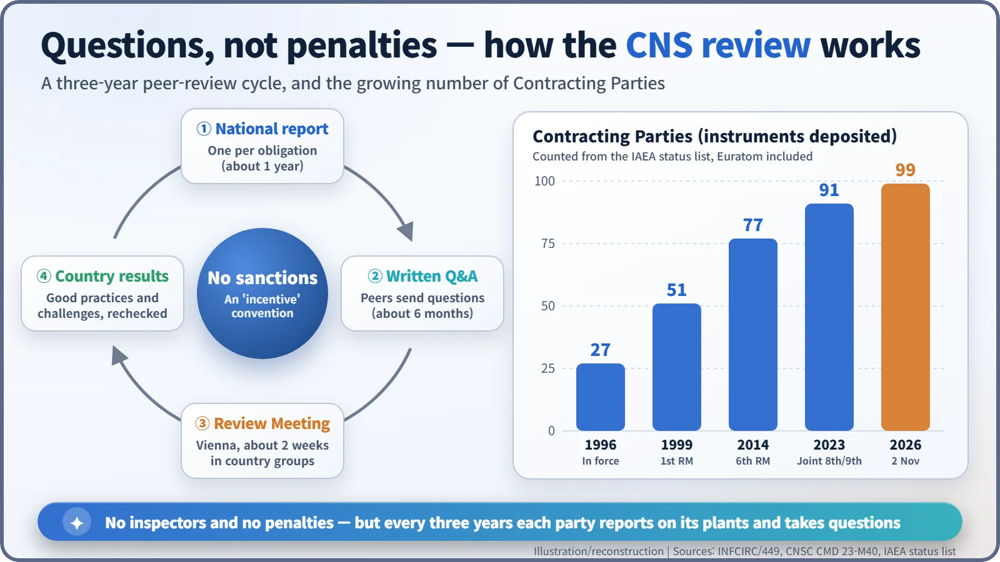
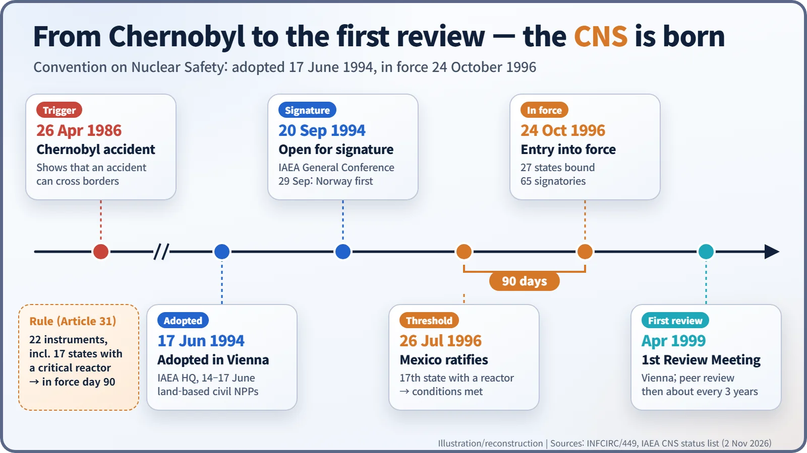
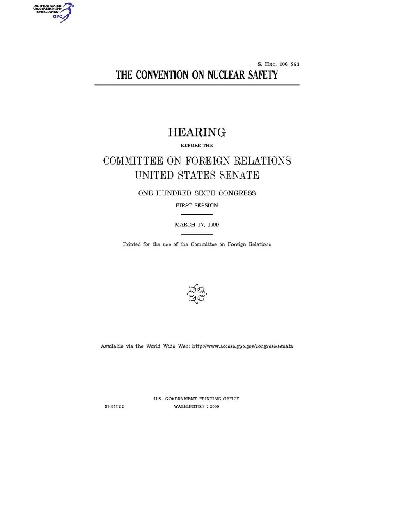
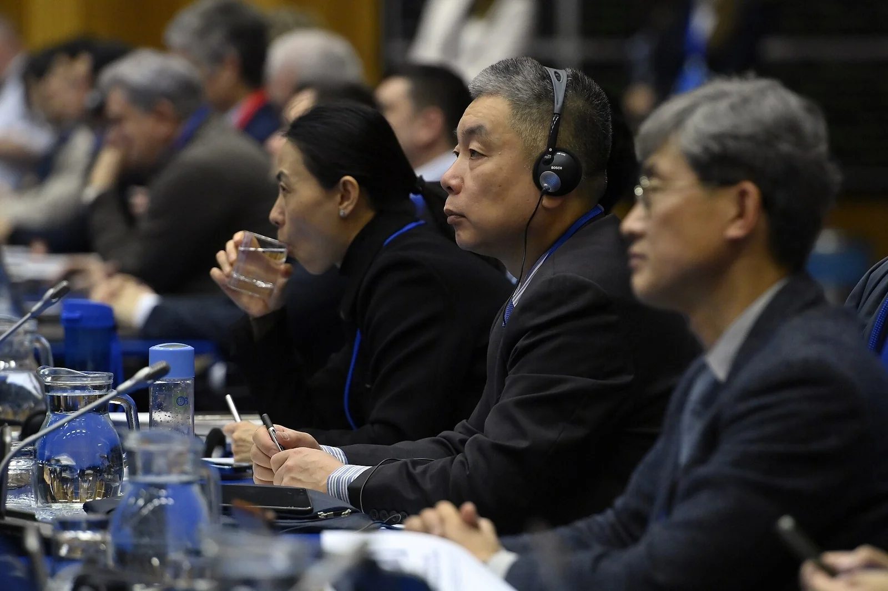

Nuclear History · 261
A Treaty With No Penalties — The Convention on Nuclear Safety (1994) and the Power of Peer Review
No inspectors, no penalties: since 1996 every party reports on its nuclear plants and answers its peers' questions every three years.
Adopted in Vienna on 17 June 1994 and in force since 24 October 1996, the Convention on Nuclear Safety was the first international legal instrument on the safety of nuclear power plants. It has no inspectors and no penalties. Instead, every three years each party reports on how it keeps its plants safe and answers questions from the others, a peer-review system that now counts 99 parties.
A treaty that calls itself an "incentive"
Treaties are usually full of obligations and consequences. Yet one treaty adopted in Vienna in 1994 introduces itself, in its own preamble, as "this incentive Convention". Read it to the end and you will not find a single clause saying what happens to a country that breaks it. And if the parties disagree about what it means? Article 29 simply says they "shall consult" at a meeting of the parties. [1]
This is the Convention on Nuclear Safety (CNS), the first international legal instrument on the safety of nuclear power plants. It has no inspectors and no court. Instead it chose a mechanism that is tedious, public and surprisingly effective: every three years, everyone hands in their homework, and everyone else gets to mark it. [3]
An accident that crossed borders, a safety system that did not
The 1986 Chernobyl accident showed that radioactive material does not stop at border posts. That same year, governments rushed through two treaties, one on early notification of a nuclear accident and one on assistance in an emergency. Both were about what to do after an accident. No international agreement dealt with preventing one.
When the Cold War ended, the safety of reactors in the former Soviet Union and Eastern Europe also became an international concern. The obstacle was sovereignty. No government welcomed foreign inspectors going through its power plants. The convention's preamble therefore starts from a firm principle: "responsibility for nuclear safety rests with the State having jurisdiction over a nuclear installation." [1]
Vienna, 17 June 1994: a third way
The International Atomic Energy Agency (IAEA) convened a diplomatic conference at its Vienna headquarters from 14 to 17 June 1994, and the convention was adopted on the final day. It covers "any land-based civil nuclear power plant", so research reactors and military facilities are outside its scope.
Articles 7 to 19 list the obligations one by one: a legislative and regulatory framework, a regulatory body, the licence holder's prime responsibility for safety, priority to safety, money and staff, human factors, quality assurance, safety assessment, radiation protection, emergency preparedness, and siting, design, construction and operation. Article 8(2) requires an "effective separation" between the regulator and any body that promotes or uses nuclear energy. Article 6 asks each party to review its existing plants as soon as possible, make reasonably practicable improvements "as a matter of urgency", and, if upgrading cannot be achieved, plan to shut the plant down as soon as practically possible. It is hard not to read that clause with Eastern Europe's older reactors in mind.
The convention commits parties to "fundamental safety principles" rather than detailed technical standards. Its engine is in Articles 5 and 20. Before each review meeting, every party submits a report on how it meets each obligation, and the other parties have "a reasonable opportunity" to discuss it and seek clarification. Not inspection, not sanctions, but open questioning: a third way. [1]

The threshold: 22 instruments, 17 reactor states
The rule for entry into force was unusual too. The convention would take effect 90 days after the 22nd instrument of ratification, acceptance or approval was deposited, but only if those instruments included 17 states "each having at least one nuclear installation which has achieved criticality in a reactor core". A treaty ratified only by countries without reactors would have meant little. [1]
Sorting the IAEA's status list by deposit date reveals a neat story. Norway was first, on 29 September 1994. South Korea ratified on 19 September 1995, the eleventh to do so. The 22nd instrument arrived in June 1996, but there were not yet enough reactor-operating states. By our own count, the 17th reactor state was Mexico, which deposited on 26 July 1996, and exactly 90 days later, on 24 October 1996, the convention entered into force. On that day 27 states had consented to be bound and 65 had signed. [2] [3]
IAEA Director General Hans Blix (born 1928) called it "a major step forward in strengthening international co-operation in the safety field", while stressing that the safe use of nuclear energy remained a national responsibility. [3]

Public marking, every three years
The first Review Meeting was held in Vienna in April 1999. The United States arrived late: the Senate Foreign Relations Committee held a hearing on 17 March 1999, the US deposited its instrument of ratification on 11 April, and the convention entered into force for the United States on 10 July 1999. [2] [6]

In practice the cycle runs like this. A country spends about a year writing its national report, then about six months answering written questions from other parties, and finally about two weeks in Vienna presenting and being questioned in country groups. Findings are recorded as good practices or challenges, and the challenges are checked again at the next meeting, like a teacher's comments that you are expected to have dealt with by next term. [4]
The system has its weak spots. Under Article 27, the content of the review debates is confidential. In a 2023 briefing, staff of Canada's regulator noted that the peer review process is "not always robust", adding that parties sometimes draft their own findings. [1] [4]
After Fukushima: a declaration instead of an amendment
After the 2011 Fukushima Daiichi accident, Switzerland proposed in December 2013 to amend Article 18 so that plants would be designed to avoid releases causing long-term off-site contamination, with the same goal applied to existing plants. On 9 February 2015, however, a diplomatic conference adopted by consensus the non-binding Vienna Declaration on Nuclear Safety instead of an amendment, a very CNS-style compromise. [5] [7]
The COVID-19 pandemic pushed back the review meeting planned for 2020, so a joint 8th and 9th Review Meeting took place from 20 to 31 March 2023, with 91 Contracting Parties. As of 2 November 2026, the IAEA status list counts 99 parties, Euratom included. [2] [4]

No penalties does not mean no pressure. Having to open your own homework every three years and answer your neighbours' questions is what has kept this treaty working for more than thirty years.